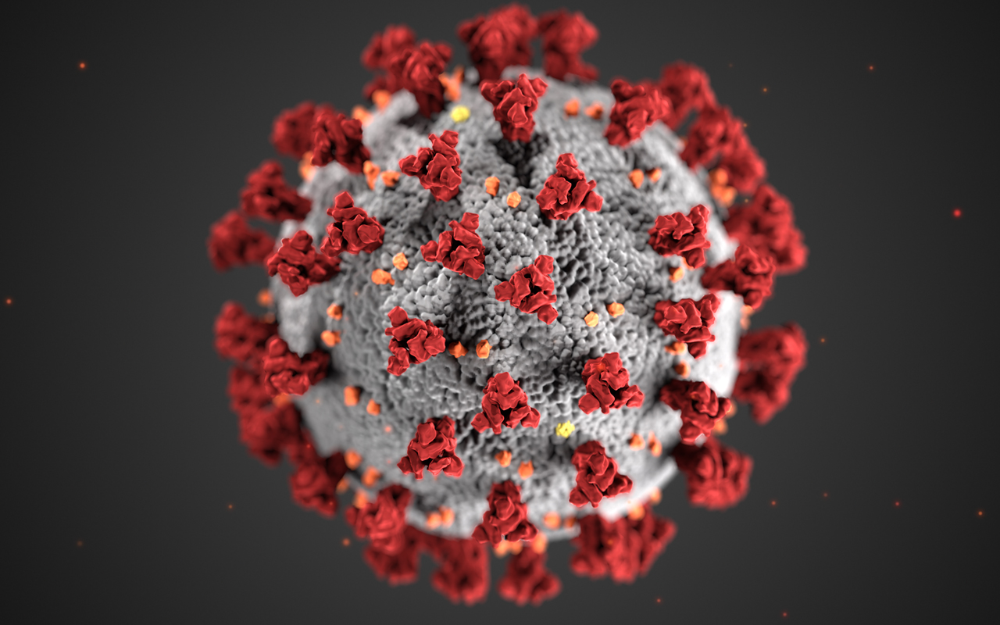

<!--The content below is only a placeholder and can be replaced.-->
<mat-toolbar color="primary">
    <svg  viewBox="0 0 100 80" width="40" height="20">
        <rect width="100" height="20" rx="8"></rect>
        <rect y="30" width="100" height="20" rx="8"></rect>
        <rect y="60" width="100" height="20" rx="8"></rect>
    </svg>
    <span>Third Line</span>
    <span class="example-spacer"></span>
    <span>hhhhhh</span>
      <button mat-icon-button disabled>
        <mat-icon color="primary" style="background-color: #673ab7 !important" svgIcon="covid-19" aria-hidden="false" aria-label="Example thumbs up SVG icon"></mat-icon>
      </button>
    <span class="fill-remaining-space"></span>
      <button mat-icon-button>
        <mat-icon color="primary"  svgIcon="male-user" aria-hidden="false" aria-label="Example thumbs up SVG icon"></mat-icon>
      </button>
</mat-toolbar>
<div style="text-align:center">
  <h1>
    Welcome to {{ title }}!
  </h1>
  </div>
<h2>Here are some links to help you start: </h2>

<router-outlet></router-outlet>

